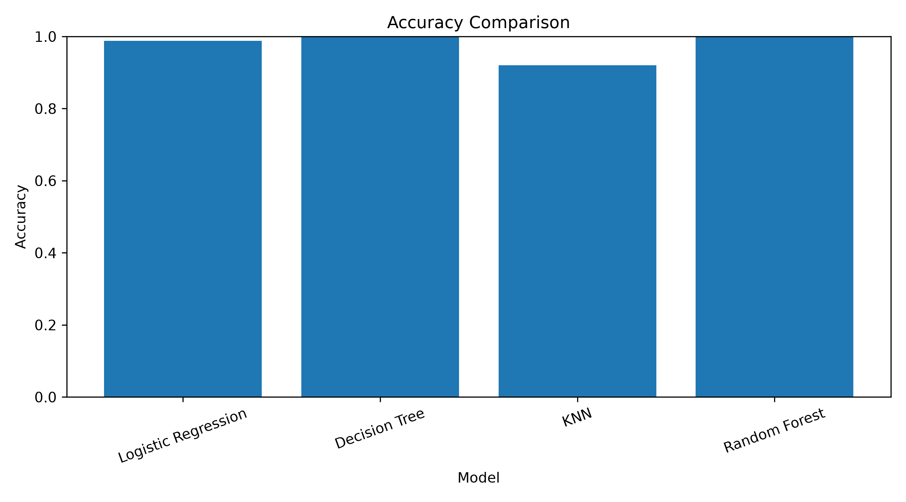
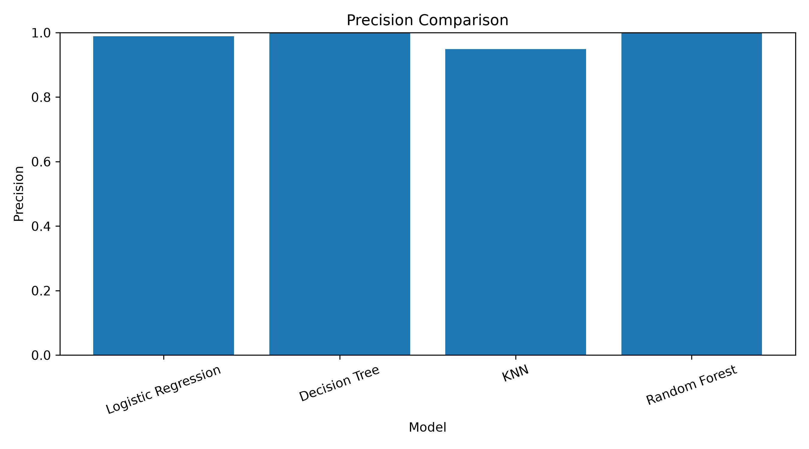
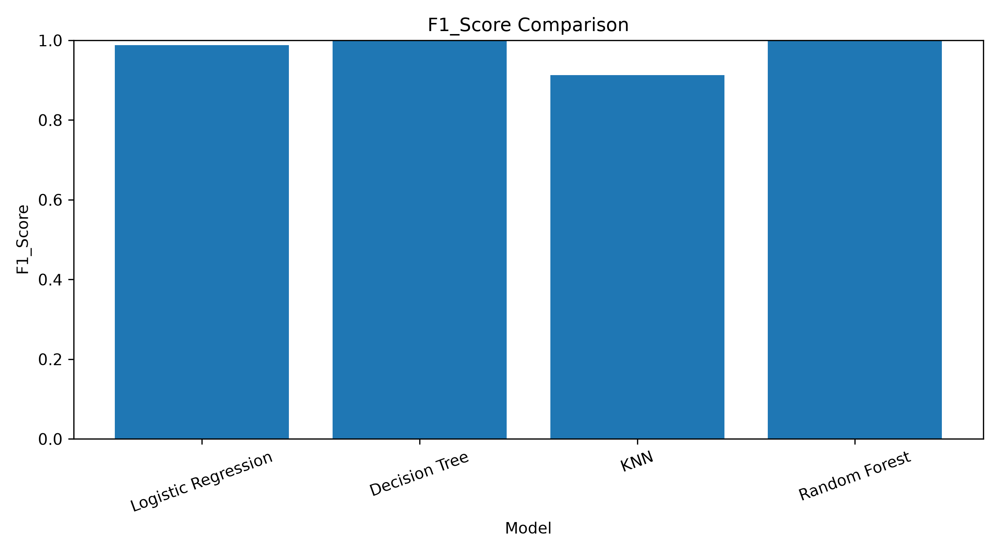
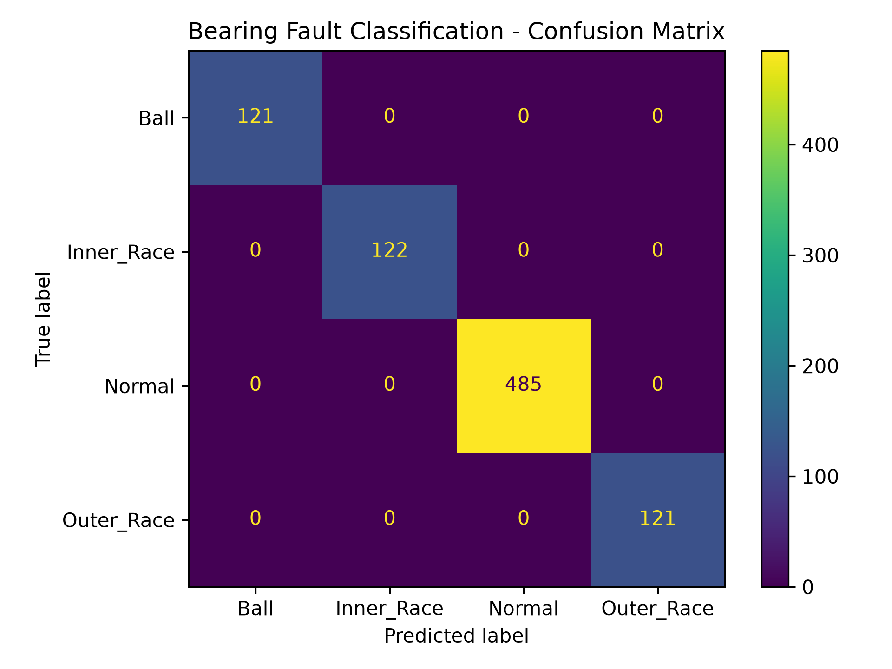
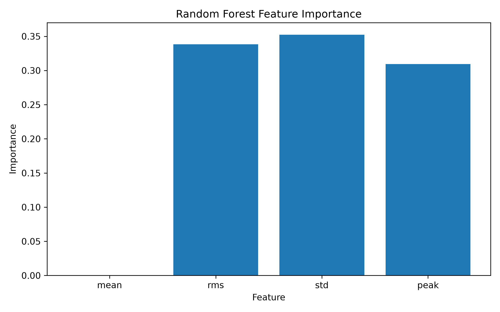

EdgeSense-Bearing is a machine-learning based predictive maintenance system that detects bearing conditions from motor vibration signals using compact statistical features and edge-cloud processing.
Experimental results obtained from the implemented CWRU bearing-data workflow and machine-learning evaluation.
Decision Tree Accuracy
Random Forest Accuracy
Theoretical Payload Reduction
Average Prediction Latency
The proposed workflow converts raw vibration signals into compact features and performs automated bearing fault classification.
CWRU drive-end vibration signal
1000 samples per window
Mean, RMS, STD & Peak
Fault classification
Bearing condition prediction
Healthy bearing vibration condition.
Fault associated with the inner race.
Fault associated with the rolling element.
Fault associated with the outer race.
Performance metrics obtained from the implemented experimental train/test evaluation.
| Model | Accuracy | Precision | Recall | F1 Score |
|---|---|---|---|---|
| Logistic Regression | 98.82% | 98.91% | 98.82% | 98.82% |
| Decision Tree | 100% | 100% | 100% | 100% |
| KNN | 91.99% | 94.86% | 91.99% | 91.30% |
| Random Forest | 100% | 100% | 100% | 100% |
Average Edge-Cloud Payload Reduction
Edge-Cloud Prediction Accuracy
Process RSS Memory
Average Model Prediction Latency
Visual outputs generated by the EdgeSense-Bearing Python analysis pipeline.

Comparison of classification accuracy across the evaluated models.

Precision performance of the evaluated machine-learning models.
Recall performance across the evaluated models.

F1-score comparison across the classification models.

Classification results on the test dataset.

Feature contribution obtained from the tree-based model.
The project uses drive-end vibration signals from the Case Western Reserve University bearing dataset.
Instead of transferring the complete raw vibration window, the edge stage extracts four compact statistical features.
Feature extraction, dataset creation, training, evaluation and benchmarking scripts.
RESULTSCSV datasets, metrics, benchmark results and generated graphs.
RESEARCHComplete research documentation and methodology.
SUBMISSIONOfficial EdgeSense-Bearing GitHub pull request.